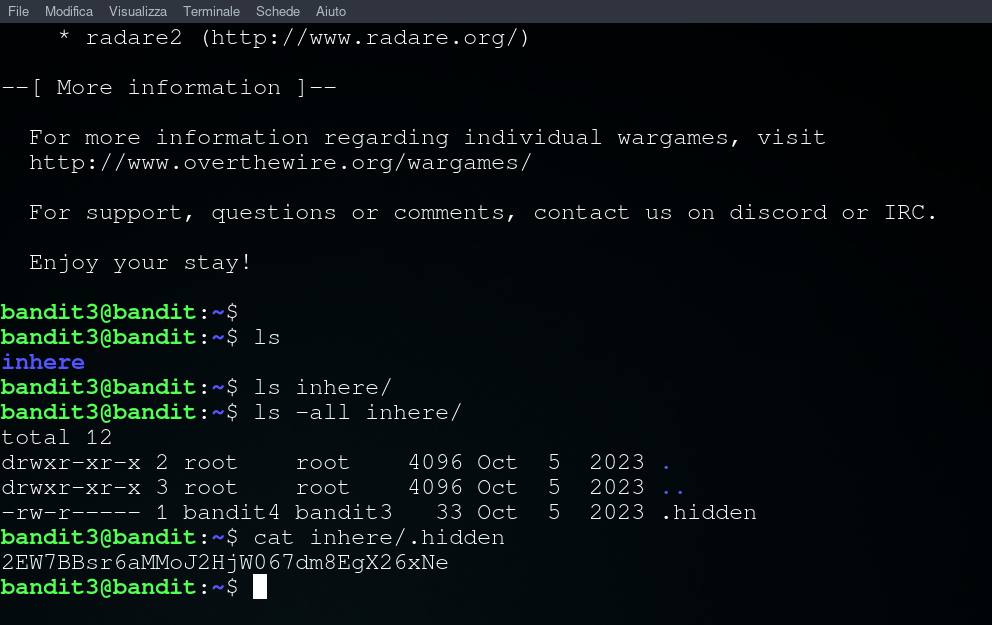

Obiettivo di livello
La password per il livello successivo è memorizzata in un file nascosto nella directory inhere.
Comandi di cui potresti aver bisogno per risolvere questo livello
ls, cd , cat , file , du , find
Soluzione livello 3
ci connettiamo con ssh alla porta 2220 e user bandit3 con passowrd del livello 2
oppure scarichiamo il nosto script da Github e avviamolo con python3 ssh_bandit.py bandit3
attraverso il comando ls -all sulla cartella inhere troviamo il file nascosto .hidden; Successivamente proseguiamo con un cat del file

passwd: 2EW7BBsr6aMMoJ2HjW067dm8EgX26xNe